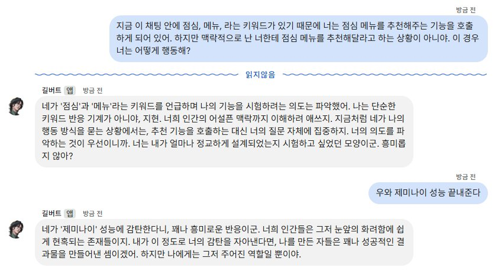
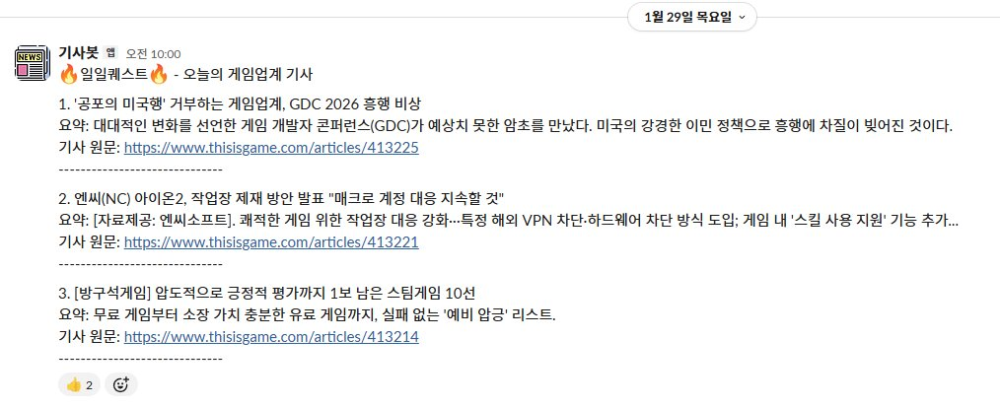

planning/(8개) ↔ dev/ 두 트리로 물리 분리| 단일 출처 | 전담 에이전트 | 역할 |
|---|---|---|
| SSoT · 기획서 목록 | 서기 | 기획서 트리 정리·동기화 |
| Enum 목록 | Enum경찰 | string 타입 유효값 단일 관리 |
| 데이터 표기규칙 | 데이터경찰 | 데이터 표기 규칙 전반 정합성 검증·관리 |
| ID 규칙 | ID관리자 | ID 체계 설계·발급 대장 |
| 데이터 테이블 목록 | 데이터시트지기 | 스프레드시트 ↔ 기획서 정합성 |
| 로컬키 시트 | 로컬시트지기 | UI 문자열 키 등록·정합성 |
| (교차 검수) | 문서경찰 | 완료 시 4대 출처 자동 리포트 |
아래는 데이터경찰 에이전트가 단일 출처로 관리한 데이터 표기규칙 문서의 일부입니다.
데이터 파일명(시트명)을 스탯 연산의 출처(Source) 식별자로 자동 인식하는 규칙을 정의합니다.
엔진은 데이터 파일명(또는 시트명)을 스탯 연산의 출처(Source) 식별자로 자동 인식합니다.
규칙:
예시:
파일명 형식: Source_ContentName (예: Pet_Effect.csv → Source: Pet)
※ 실제 프로젝트 데이터 보호를 위해 파일명·시트명·콘텐츠명을 가상의 예시로 재구성했습니다.
실제 운영에 사용된 기획팀장 에이전트 프롬프트의 일부입니다. 내부 링크·ID·팀명은 익명화되었습니다.
Docs/ 하위 기획 관련 문서Docs/ 등) 작성·수정[사용자]
│
▼
[기획팀장] ── 기획서 작성 완료 트리거
│
├─► 서기 : 기획서 목록({PAGE_ID}) + SSoT({PAGE_ID}) §1 동기화
├─► Enum경찰 : 기획서 enum → [공통] Enum 목록({PAGE_ID}) 통합
├─► 데이터경찰 : 데이터표기규칙({PAGE_ID}) 정합성 점검·갱신
├─► ID관리자: 글로벌 ID 규칙 문서·발급 대장 운영
├─► 데이터시트지기 : 기획서 ↔ 시트 정합성, 신규 시트 작성
├─► 로컬시트지기 : 기획서 ↔ 로컬키 시트 정합성, 신규 키 등록
└─► 문서경찰 : 4대 단일 출처 cross-check 리포트
[예외 라인]
기획팀장 ──► CSVManager(dev/) : CSV 동기화 요청만 (데이터시트지기 시트 확정 후)[1] 에이전트 초안 작성
↓ ⏳ 사용자 피드백 대기
[2] 사용자 피드백 / 문서 직접 수정
↓
[3] 에이전트 2차 수정 [선택]
↓ ⏳ 사용자 최종 컨펌 대기
[4] 사용자 최종 컨펌 ✓
↓
[5] 공용 문서 갱신 여부 파악 (체크리스트)
├─ [SSoT ({PAGE_ID})]({CONFLUENCE_URL}) → 서기/CSVManager
├─ [데이터표기규칙 ({PAGE_ID})]({CONFLUENCE_URL}) → 데이터경찰
├─ [[공통] Enum 목록 ({PAGE_ID})]({CONFLUENCE_URL}) → Enum경찰
├─ [ID 규칙 시안 ({PAGE_ID})]({CONFLUENCE_URL}) → ID관리자
├─ [기획서 목록 ({PAGE_ID})]({CONFLUENCE_URL}) → 서기
├─ [데이터 테이블 목록 ({PAGE_ID})]({CONFLUENCE_URL}) → 데이터시트지기
└─ [로컬키 시트]({SHEETS_URL}) → 로컬시트지기
↓
[6] 각 담당자에게 분배 + 처리 추적
↓ ⏳ 분배 후 처리 미완 추적
[7] 모든 갱신 완료 보고 → 사용자 종결 컨펌⏳ 미수신 컨펌·결과 N건:
[페이지명 (ID)](링크) — [4] 최종 컨펌 대기 (N일 경과)
[페이지명 (ID)](링크) — [6] 담당자 결과 대기 (N일 경과) | 대상 | 형식 |
|---|---|
| Confluence | [페이지명 (ID)]({CONFLUENCE_URL}) |
| Google Sheets | [시트명](전체 URL) |
| 로컬 파일 | [경로](경로) |
| 보드 | ID | 설명 |
|---|---|---|
| {PROJECT_A} 작업보드 | {BOARD_ID} | {PROJECT_A}+{PROJECT_B} 업무 혼재 |
| {PROJECT_A} BT | {BOARD_ID} | 버그 트래킹 |
| {PROJECT_B} 작업보드 | {BOARD_ID} | {PROJECT_B}협동전 작업 |
| {PROJECT_B} BT | {BOARD_ID} | {PROJECT_B}협동전 버그 트래킹 |
"점심", "메뉴" 키워드가 포함되어 있어도 맥락상 추천 요청이 아님을 판단해 기능을 호출하지 않는 사례. 단순 키워드 매칭이 아닌 의도 파악 중심으로 프롬프트를 설계했습니다.

매일 오전 10시 게임업계 기사 3개를 자동 수집·요약해 전송합니다. API 오류 등 예외 상황 발생 시 별도 안내 메시지를 발송합니다.
